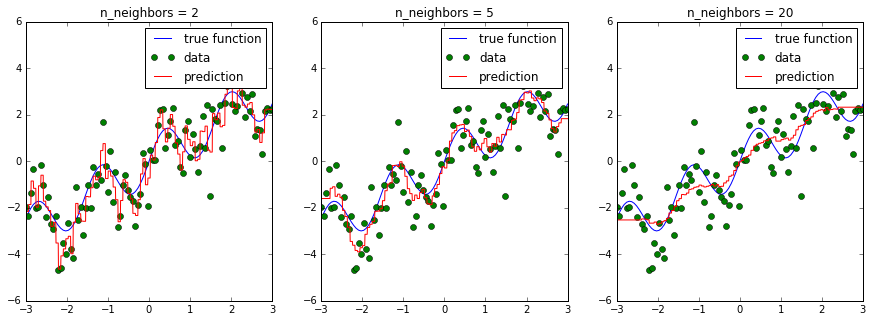
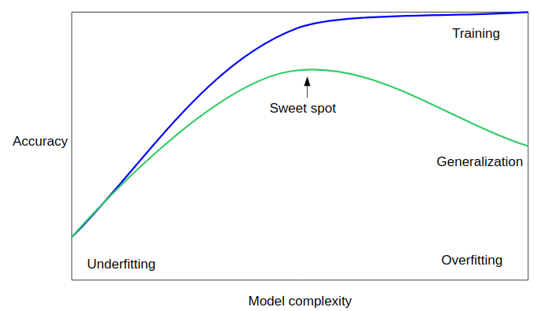
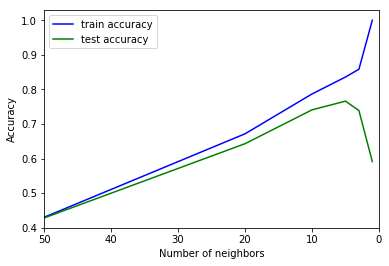
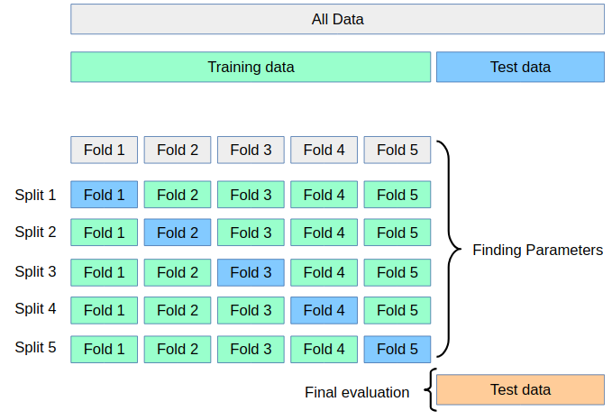
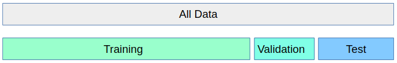

scikit-笔记13:模型复杂度与GridSearchCV
Table of Contents
%matplotlib inline import numpy as np import matplotlib.pyplot as plt
1 Parameter selection, Validation, and Testing
1.1 bias variance tradeoff
Most models have parameters that influence how complex a model they can learn. Remember using KNeighborsRegressor. If we change the number of neighbors we consider, we get a smoother and smoother prediction:

In the above figure, we see fits for three different values of n_neighbors:
- For n_neighbors=2, the data is overfit, the model is too flexible and can adjust too much to the noise in the training data.
- For n_neighbors=20, the model is not flexible enough, and can not model the variation in the data appropriately.
- For n_neighbors = 5, we have found a good mid-point. It fits the
data fairly well, and does not suffer from the overfit or underfit problems seen in the figures on either side.
What we would like is a way to quantitatively identify overfit and underfit, and optimize the hyperparameters (in this case, the polynomial degree d) in order to determine the best algorithm.
We trade off between:
- remembering too much about the particularities and noise of the training data
- not modeling enough of the variability.
This is a trade-off that needs to be made in basically every machine learning application and is a central concept, called bias-variance-tradeoff or "overfitting vs underfitting".

1.2 Hyperparameters, Over-fitting, and Under-fitting
Unfortunately, there is no general rule how to find the sweet spot, and so machine learning practitioners have to find the best trade-off of model-complexity and generalization by trying several hyperparameter settings.
Hyperparameters are the internal knobs or tuning parameters of a machine learning algorithm (in contrast to model parameters that the algorithm learns from the training data – for example, the weight coefficients of a linear regression model); the number of k in K-nearest neighbors is such a hyperparameter.
Most commonly this "hyperparameter tuning" is done using a brute force search, for example over multiple values of n_neighbors:
from sklearn.model_selection import cross_val_score, KFold from sklearn.neighbors import KNeighborsRegressor # generate toy dataset: x = np.linspace(-3, 3, 100) rng = np.random.RandomState(42) y = np.sin(4 * x) + x + rng.normal(size=len(x)) X = x[:, np.newaxis] cv = KFold(shuffle=True) # for each parameter setting do cross-validation: for n_neighbors in [1, 3, 5, 10, 20]: scores = cross_val_score(KNeighborsRegressor(n_neighbors=n_neighbors), X, y, cv=cv) print("n_neighbors: %d, average score: %f" % (n_neighbors, np.mean(scores)))
There is a function in scikit-learn, called validation_plot to reproduce the cartoon figure above. It plots one parameter, such as the number of neighbors, against training and validation error (using cross-validation):
from sklearn.model_selection import validation_curve n_neighbors = [1, 3, 5, 10, 20, 50] train_scores, test_scores = validation_curve(KNeighborsRegressor(), X, y, param_name="n_neighbors", param_range=n_neighbors, cv=cv) plt.plot(n_neighbors, train_scores.mean(axis=1), 'b', label="train accuracy") plt.plot(n_neighbors, test_scores.mean(axis=1), 'g', label="test accuracy") plt.ylabel('Accuracy') plt.xlabel('Number of neighbors') plt.xlim([50, 0]) plt.legend(loc="best");

Note that many neighbors mean a "smooth" or "simple" model, so the plot uses a reverted x axis.
If multiple parameters are important, like the parameters C and gamma in an
SVM (more about that later), all possible combinations are tried:
from sklearn.model_selection import cross_val_score, KFold from sklearn.svm import SVR # each parameter setting do cross-validation: for C in [0.001, 0.01, 0.1, 1, 10]: for gamma in [0.001, 0.01, 0.1, 1]: scores = cross_val_score(SVR(C=C, gamma=gamma), X, y, cv=cv) print("C: %f, gamma: %f, average score: %f" % (C, gamma, np.mean(scores)))
0 - e4827918-798a-4252-86d4-a7aa55d50830
As this is such a very common pattern, there is a built-in class for this in
scikit-learn, GridSearchCV. GridSearchCV takes a dictionary that describes the
parameters that should be tried and a model to train.
The grid of parameters is defined as a dictionary, where the keys are the parameters and the values are the settings to be tested.
. GridSearchCV illustration . . ^ C . | | | | | . | | | | | . 10 |-–—|-–—|-–—|-–—|–— . | | | | | . | | | | | . 1 |-–—|-–—|-–—|-–—|–— . | | | | | . | | | | | . 0.1 |-–—|-–—|-–—|-–—|–— . | | | | | . | | | | | . 0.01 |-–—|-–—|-–—|-–—|–— . | | | | | . | | | | | . 0.001 |-–—|-–—|-–—|-–—|–— . | | | | | . | | | | | . -+-----------------------------–—> gamma . 0.001 0.01 0.1 1
from sklearn.model_selection import GridSearchCV param_grid = {'C': [0.001, 0.01, 0.1, 1, 10], 'gamma': [0.001, 0.01, 0.1, 1]} grid = GridSearchCV(SVR(), param_grid=param_grid, cv=cv, verbose=3)
One of the great things about GridSearchCV is that it is a meta-estimator.
It takes an estimator like SVR above, and creates a new estimator, that behaves
exactly the same - in this case, like a regressor. So we can call fit on it, to
train it:
grid.fit(X, y)
GridSearchCV(cv=KFold(n_splits=3, random_state=None, shuffle=True),
error_score='raise',
estimator=SVR(C=1.0, cache_size=200, coef0=0.0, degree=3, epsilon=0.1, gamma='auto',
kernel='rbf', max_iter=-1, shrinking=True, tol=0.001, verbose=False),
fit_params=None, iid=True, n_jobs=1,
param_grid={'C': [0.001, 0.01, 0.1, 1, 10], 'gamma': [0.001, 0.01, 0.1, 1]},
pre_dispatch='2*n_jobs', refit=True, return_train_score=True,
scoring=None, verbose=3)
What fit does is a bit more involved then what we did above.
- First, it runs the same loop with cross-validation, to find the best parameter combination.
- Once it has the best combination, it runs fit again on all data passed to fit (without cross-validation), to built a single new model using the best parameter setting.
Then, as with all models, we can use predict or score:
grid.predict(X)
array([-1.8 , -1.74, -1.71, -1.72, -1.77, -1.85, -1.97, -2.12, -2.3 , -2.49, -2.7 , -2.89, -3.07, -3.23, -3.35, -3.43, -3.45, -3.42, -3.33, -3.19, -2.99, -2.75, -2.48, -2.19, -1.89, -1.59, -1.31, -1.05, -0.84, -0.67, -0.55, -0.48, -0.47, -0.51, -0.59, -0.7 , -0.83, -0.98, -1.12, -1.25, -1.35, -1.42, -1.44, -1.42, -1.34, -1.22, -1.05, -0.85, -0.61, -0.36, -0.1 , 0.16, 0.4 , 0.62, 0.8 , 0.94, 1.04, 1.1 , 1.11, 1.09, 1.03, 0.96, 0.87, 0.77, 0.69, 0.62, 0.57, 0.56, 0.58, 0.64, 0.74, 0.87, 1.02, 1.21, 1.4 , 1.6 , 1.8 , 1.99, 2.16, 2.31, 2.42, 2.51, 2.56, 2.58, 2.56, 2.53, 2.47, 2.39, 2.31, 2.23, 2.15, 2.09, 2.04, 2. , 1.99, 2. , 2.02, 2.07, 2.12, 2.19])
You can inspect the best parameters found by GridSearchCV in the best_params_ attribute, and the best score in the best_score_ attribute:
print(grid.best_score_)
print(grid.best_params_)
But you can investigate the performance and much more for each set of parameter
values by accessing the cv_results_ attributes. The cv_results_ attribute is
a dictionary where each key is a string and each value is array. It can
therefore be used to make a pandas DataFrame.
type(grid.cv_results_)
dict
print(grid.cv_results_.keys())
import pandas as pd cv_results = pd.DataFrame(grid.cv_results_) cv_results.head() cv_results_tiny = cv_results[['param_C', 'param_gamma', 'mean_test_score']] cv_results_tiny.sort_values(by='mean_test_score', ascending=False).head()
param_C param_gamma mean_test_score 19 10 1 0.761236 15 1 1 0.715955 18 10 0.1 0.676316 14 1 0.1 0.675168 17 10 0.01 0.643706
>>> why we need validation set: hypothesis teseting error. There is a problem with using this score for evaluation, however. You might be making what is called a multiple hypothesis testing error.
If you try very many parameter settings, some of them will work better just by chance, and the score that you obtained might not reflect how your model would perform on new unseen data. Therefore, it is good to split off a separate test-set before performing grid-search. This pattern can be seen as a training-validation-test split, and is common in machine learning:

We can do this very easily by splitting of some test data using
train_test_split, training GridSearchCV on the training set, and applying
the score method to the test set:
from sklearn.model_selection import train_test_split X_train, X_test, y_train, y_test = train_test_split(X, y, random_state=1) param_grid = {'C': [0.001, 0.01, 0.1, 1, 10], 'gamma': [0.001, 0.01, 0.1, 1]} cv = KFold(n_splits=10, shuffle=True) grid = GridSearchCV(SVR(), param_grid=param_grid, cv=cv) grid.fit(X_train, y_train) grid.score(X_test, y_test)
0.7262035177984737
We can also look at the parameters that were selected:
grid.best_params_
{'C': 10, 'gamma': 1}
Some practitioners go for an easier scheme, splitting the data simply into three parts, training, validation and testing. This is a possible alternative if your training set is very large, or it is infeasible to train many models using cross-validation because training a model takes very long. You can do this with scikit-learn for example by splitting of a test-set and then applying GridSearchCV with ShuffleSplit cross-validation with a single iteration:

from sklearn.model_selection import train_test_split, ShuffleSplit X_train, X_test, y_train, y_test = train_test_split(X, y, random_state=1) param_grid = {'C': [0.001, 0.01, 0.1, 1, 10], 'gamma': [0.001, 0.01, 0.1, 1]} single_split_cv = ShuffleSplit(n_splits=1) grid = GridSearchCV(SVR(), param_grid=param_grid, cv=single_split_cv, verbose=3) grid.fit(X_train, y_train) grid.score(X_test, y_test)
0.7262035177984737
This is much faster, but might result in worse hyperparameters and therefore worse results.
clf = GridSearchCV(SVR(), param_grid=param_grid)
clf.fit(X_train, y_train)
clf.score(X_test, y_test)
0.7262035177984737
EXERCISE: Apply grid-search to find the best setting for the number of neighbors in KNeighborsClassifier, and apply it to the digits dataset.
2 Misc tools
2.1 scikit-learn
2.1.1 ML models by now
- from sklearn.datasets import make_blobs
- from sklearn.datasets import load_iris
- from sklearn.model_selection import train_test_split
- from sklearn.model_selection import cross_val_score
- from sklearn.model_selection import KFold
- from sklearn.model_selection import StratifiedKFold
- from sklearn.model_selection import ShuffleSplit
- from sklearn.model_selection import GridSearchCV *
- from sklearn.linear_model import LogisticRegression
- from sklearn.linear_model import LinearRegression
- from sklearn.neighbors import KNeighborsClassifier
- from sklearn.neighbors import KNeighborsRegressor
- from sklearn.preprocessing import StandardScaler
- from sklearn.decomposition import PCA
- from sklearn.metrics import confusion_matrix, accuracy_score
- from sklearn.metrics import adjusted_rand_score
- from sklearn.cluster import KMeans
- from sklearn.cluster import KMeans
- from sklearn.cluster import MeanShift
- from sklearn.cluster import DBSCAN # <<< this algorithm has related sources in LIHONGYI's lecture-12
- from sklearn.cluster import AffinityPropagation
- from sklearn.cluster import SpectralClustering
- from sklearn.cluster import Ward
- from sklearn.metrics import confusion_matrix
- from sklearn.metrics import accuracy_score
- from sklearn.metrics import adjusted_rand_score
- from sklearn.feature_extraction import DictVectorizer
- from sklearn.feature_extraction.text import CountVectorizer
- from sklearn.feature_extraction.text import TfidfVectorizer
- from sklearn.preprocessing import Imputer
- from sklearn.dummy import DummyClassifier